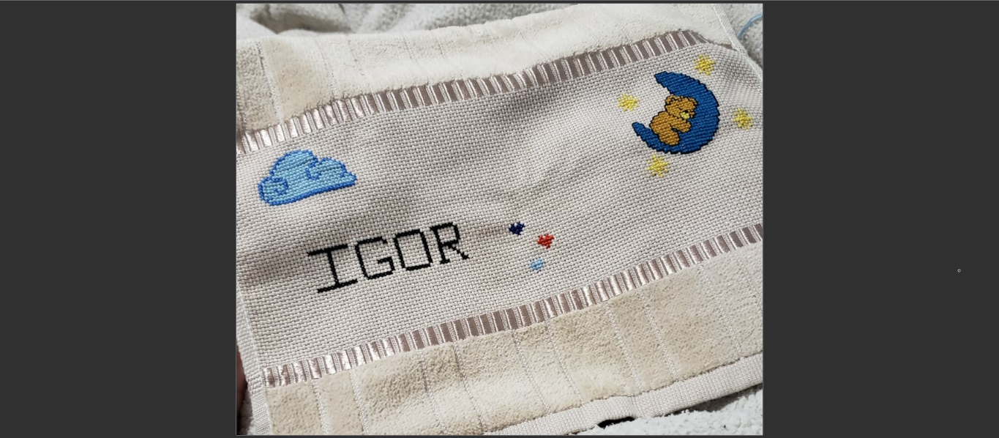
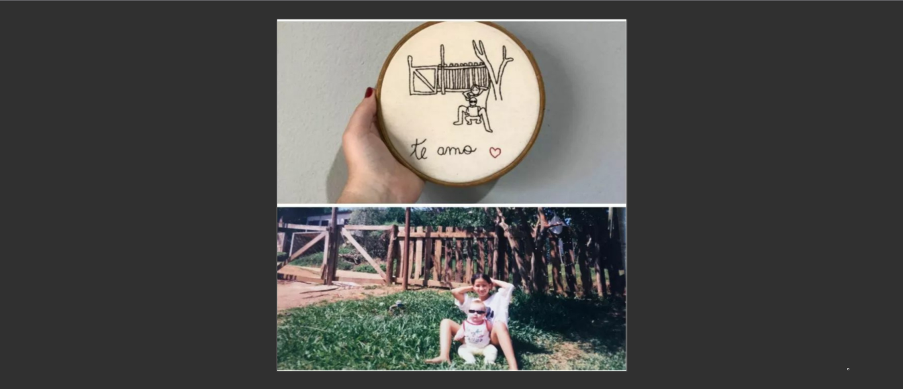
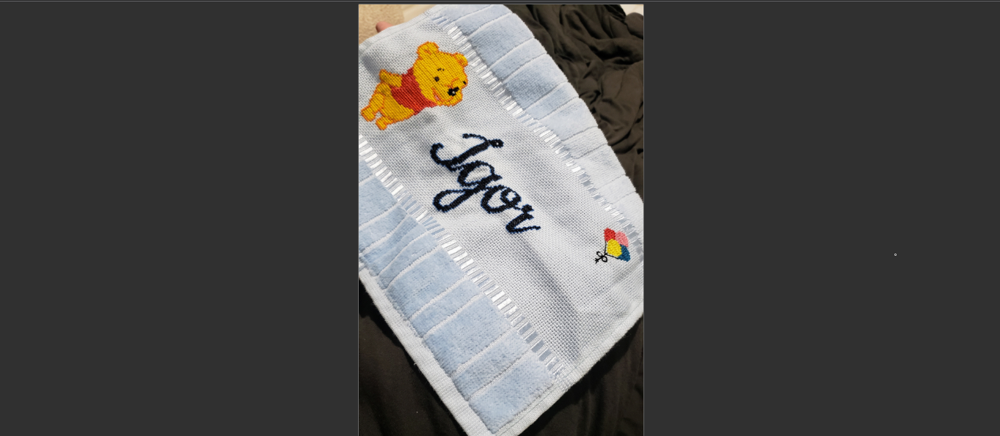
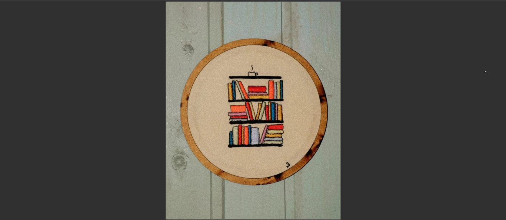
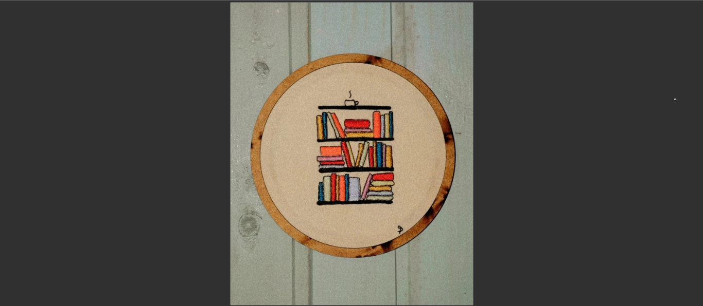
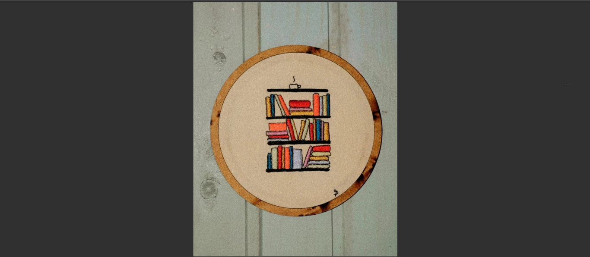

Bordado Livre & Ponto Cruz
Início

Bordado Ponto Cruz feito em toalha de boca com linha de meada (tons de azul, vermelho e amarelo) e agulha de costura.
Clique na imagem para ampliar!

Projeto Esboço feito com bastidor, linha de meada preta e vermelha e agulha de costura.
Clique na imagem para ampliar!

Bordado Ponto Cruz feito em toalha de boca com linha de meada (amarela, vermelha, rosa, azul e preta) e agulha de costura.
Clique na imagem para ampliar!
Bordado feito em bastidor pequeno, com linha de meada em tons de amarelo e agulha de costura.
Clique na imagem para ampliar!

Bordado feito em bastidor pequeno, com linha de meada em tons coloridos e agulha de costura.
Clique na imagem para ampliar!
 
